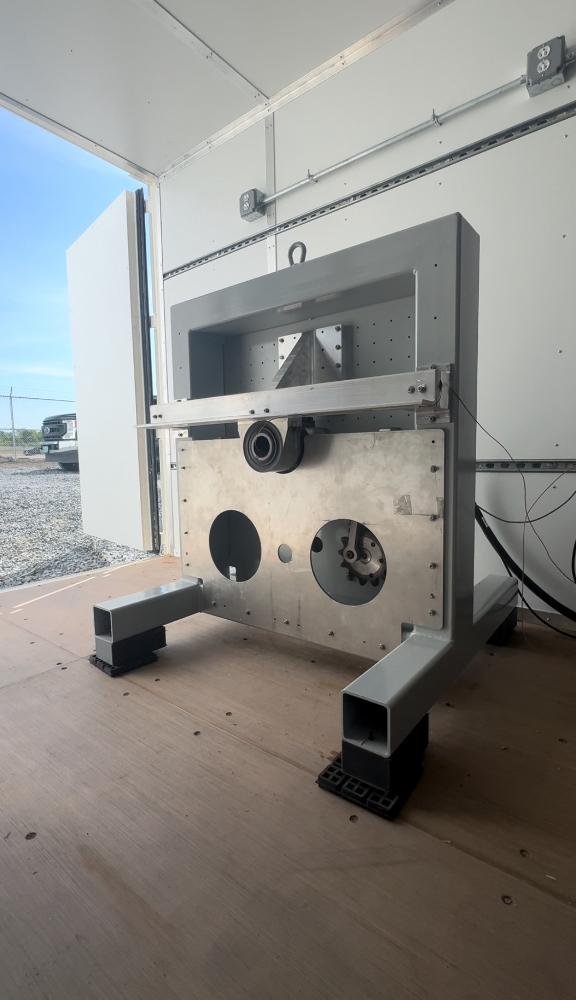

Project Overview
During my first co-op at BETA Technologies, I was tasked with developing a dynamic fatigue rig to validate the bearings used in the rotor assemblies of the company's x250 eVTOL vertical lift propellers.
The Challenge
While these rotors primarily generate lift in vertical flight, their horizontal orientation during forward flight introduces unique loading conditions. As the aircraft transitions, the advancing rotor blades experience higher aerodynamic loads than the retreating blades—a phenomenon known as asymmetric vibratory loading. This creates uneven cyclic stresses within the rotor system.
Technical Problem
The HCL bearings within the rotor assembly were identified as critical components subject to these asymmetric stresses. To ensure their reliability and prevent premature fatigue failures, I designed a test rig capable of:
Frequency Matching
Reproduce the correct resonant frequencies and vibratory modes experienced during operation
Realistic Loading
Generate accurate angular deflection profiles at predetermined rotor speeds
Sustained Testing
Apply sustained cyclic loading to evaluate long-term fatigue resistance
My Approach
1. System Modeling & Analysis
- Calculated masses and geometry needed to tune the rig's shaker arm to the system's resonant frequency
- Ensured proper angular deflection profile at predetermined rotor speeds matching flight conditions
- Validated analytical model against known rotor loading data from flight testing
2. Test Rig Development
- Designed dynamic loading mechanism to cyclically load bearings at representative frequencies
- Integrated instrumentation for vibration, frequency, and angular deflection measurement
- Calibrated rig output against analytical models to validate test fidelity
- Built fixture assembly to mount bearings in realistic rotor hub configuration
3. Validation & Problem Solving
- Ensured repeatability of test cycles to generate meaningful fatigue data
- Developed testing protocol for accelerated life testing of multiple bearing samples
- Documented results to inform bearing selection and rotor design decisions
Design Features
Shaker Arm Assembly
Tuned mass-geometry to match rotor system resonance for accurate vibratory loading simulation
Bearing Mounting Fixture
Replicates actual hub geometry to ensure bearing experiences realistic constraint conditions
Instrumentation
Accelerometers and encoders for measuring vibration amplitude, frequency, and angular deflection
Adjustable Loading
Variable drive system to test at multiple operating speeds and load conditions
Results & Impact
✓ Validated
HCL bearings confirmed for asymmetric loading
De-Risked
Improved confidence in x250 rotor reliability
Scalable
Rig design adaptable for other bearing geometries
Engineering Contribution
This project provided essential validation data linking analytical rotor loading models → physical fatigue performance. The rig demonstrated that dynamic fatigue testing reveals long-term risks not visible in static load testing, ultimately improving the safety and reliability of BETA's eVTOL propulsion system.
Technical Learnings
Key Insights
- Vibratory systems analysis: Resonance, angular deflection, and fatigue loading require precise tuning to match operational conditions
- Lab vs. field testing: Accurately reproducing flight conditions in a controlled lab environment requires both analytical rigor and physical iteration
- Dynamic testing value: Cyclic fatigue testing reveals failure modes that static testing cannot predict, especially for rotating machinery
- Aerodynamic effects: Translating asymmetric lift forces into mechanical test conditions requires deep understanding of rotor dynamics
Technical Skills Applied
- Vibratory systems analysis (resonance, angular deflection, fatigue loads)
- Mechanical design of test rigs and cyclic loading systems
- Instrumentation and validation of dynamic test setups
- CAD modeling and structural analysis
- Test protocol development and data analysis
Additional Projects at BETA (Co-op 1)
Modular Propeller Packaging System
Developed a clamshell packaging system for shipping fragile internal propeller components and receiving the fully constructed propeller in the same box. Introduced thermoformed packaging methods to the manufacturing team.
Paint-Balancing Structure
Designed and built a fixture for propeller manufacturing that enables precision balancing after paint application, ensuring smooth operation at high RPM.
Skills Demonstrated
Test Rig Design
Vibratory Analysis
Fatigue Testing
Rotor Dynamics
Instrumentation
CAD (SolidWorks)
Structural Analysis
eVTOL Systems
Aerospace Testing
Problem Solving